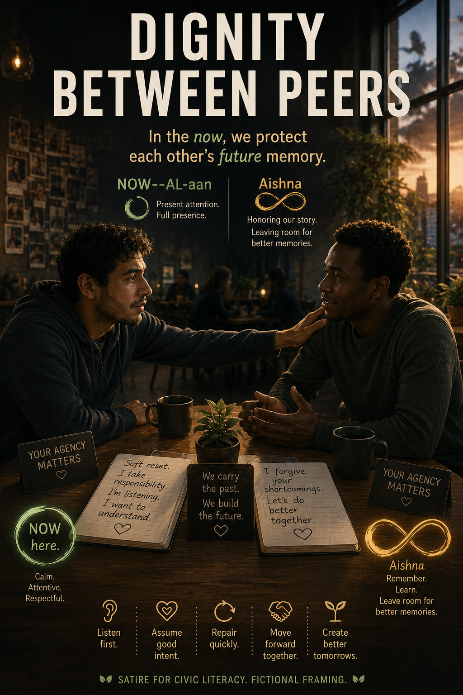
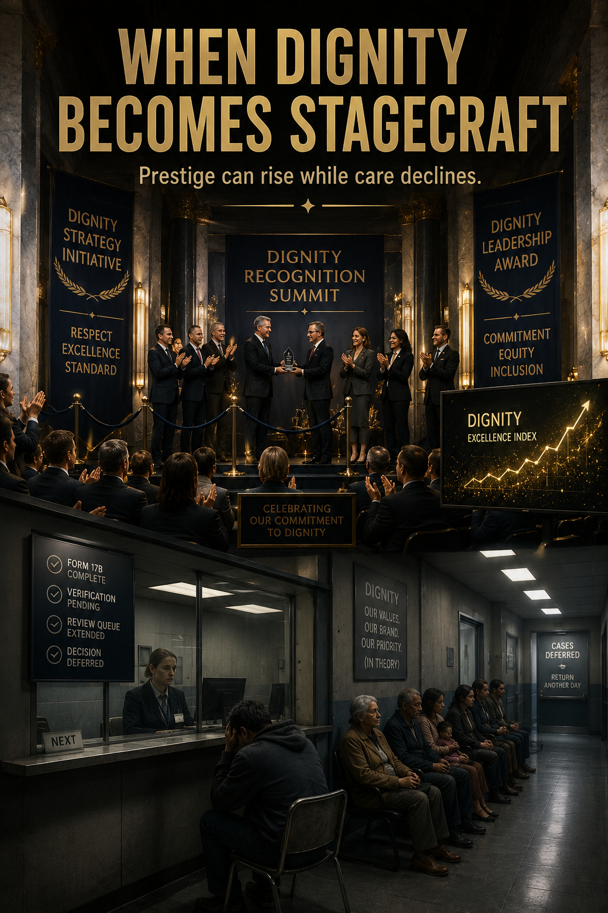
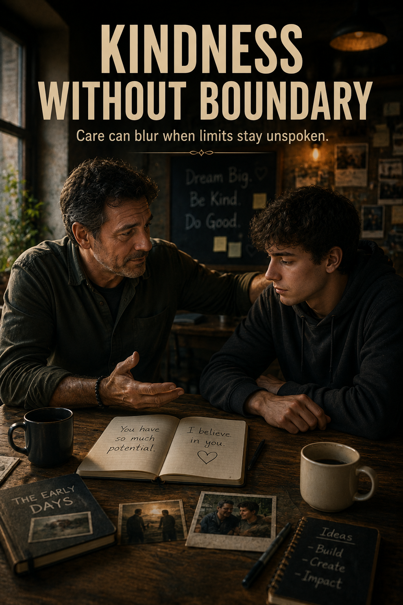

Definition
This campaign contrasts dignity theater against lived dignity. The core claim is simple: dignity is not what your language signals, dignity is what your behavior protects when tension rises.
Campaign meme entry, POC-05
A human-centric doctrine set about dignity under pressure, showing the difference between symbolic performance and clear boundary-based respect.

This campaign contrasts dignity theater against lived dignity. The core claim is simple: dignity is not what your language signals, dignity is what your behavior protects when tension rises.
Use this set when teams confuse polished language with real respect, when conflict-avoidance gets mislabeled as kindness, or when people need a visual way to separate warm tone from accountable conduct.



A to B: The early images establish the mirror problem, dignity as aesthetic and wording. They are useful because they expose how easily professional tone can be mistaken for moral quality.
C: The middle variant shows the transition zone. You can feel the intent toward real dignity, but the limit-setting is still too soft, which creates a "warm but unclear" read.
D: This version lands doctrinally, but it over-explains. It is valuable for teaching, less ideal for subtle persuasion.
E: The selected final image works because it keeps humanity and adds non-negotiable boundaries. Forgiveness is present, but approval collapse is not.
Do not read this campaign as anti-dignity. Read it as anti-performance-only dignity.
The steelman target is operational dignity: clarity, reciprocity, and consequences handled without humiliation.
The mirror target is reputation management that looks ethical but avoids hard boundary decisions.